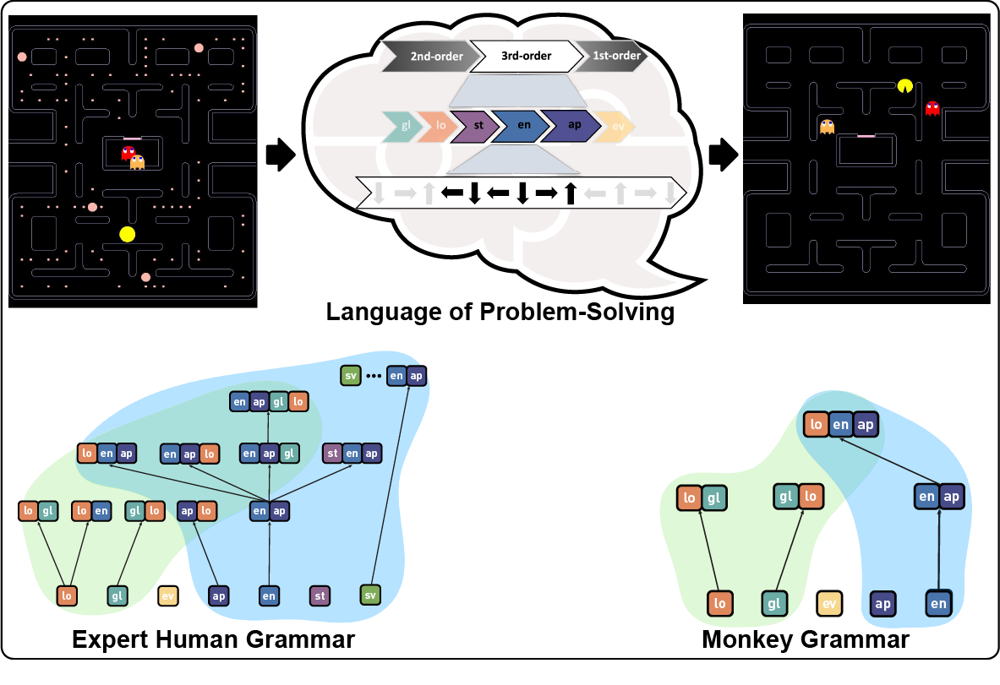
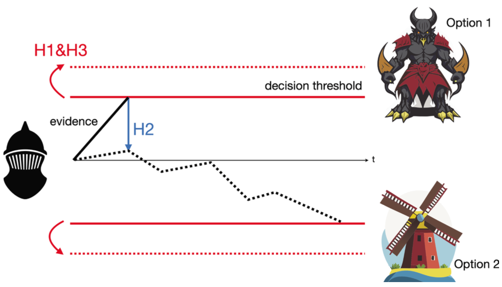
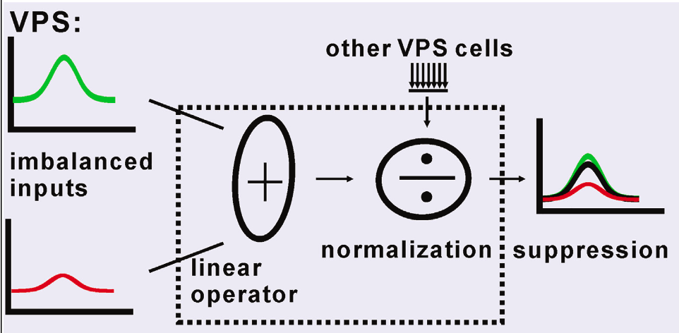
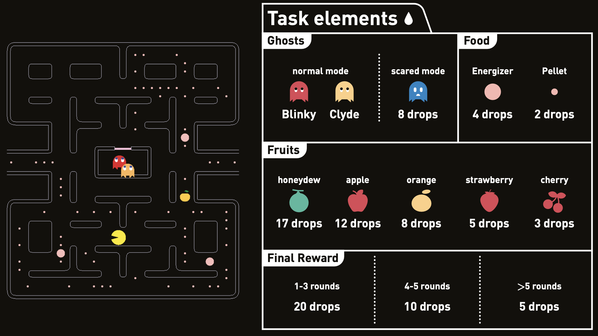
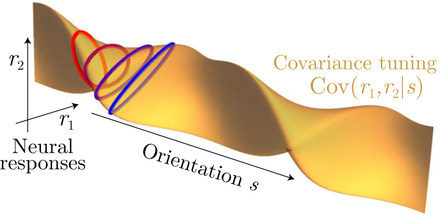
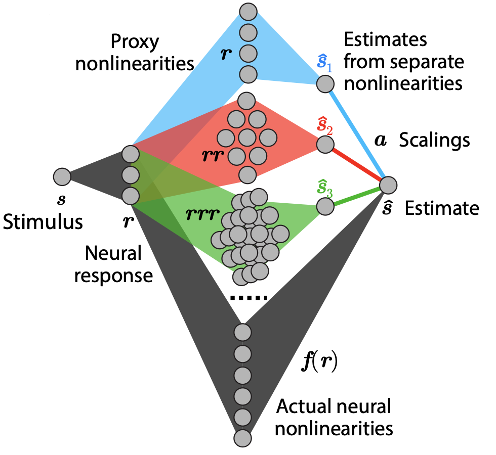
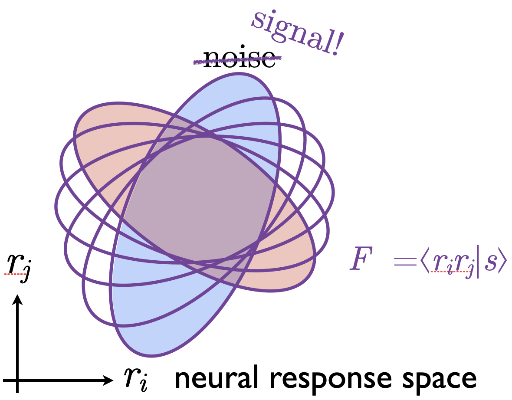

| Thumbnail | Publications |
|---|---|
|
 |
A Language Model of Problem Solving in Humans and Macaque Monkeys
Published in Current Biology 2025 [pdf] AI Cognitive Science Problem-solving |
|
 |
Unraveling the Enigmatic Role of the Subthalamic Nucleus
Published in eLife 2024 [pdf] Neuroscience Decision-making |
|
 |
The Computational Rules of Cross-modality Suppression in the Visual Posterior Sylvian Area
Published in iScience 2023 [pdf] Neuroscience Perception |
|
 |
Monkey Plays Pac-Man with Compositional Strategies and Hierarchical Decision-making
Published in eLife 2022 [pdf] Cognitive Science Decision-making |
|
 |
Revealing Nonlinear Neural Decoding by Analyzing Choices
Published in Nature Communications 2021 [pdf] Neuroscience Neural Coding Theory |
|
 |
Essential Nonlinear Properties in Neural Decoding
Published in Cosyne 2017 Abstract 2017 [pdf] Neuroscience Neural Coding Theory |
|
 |
Robust Nonlinear Neural Codes
Published in Cosyne 2015 Abstract 2015 [pdf] Neuroscience Neural Coding Theory |